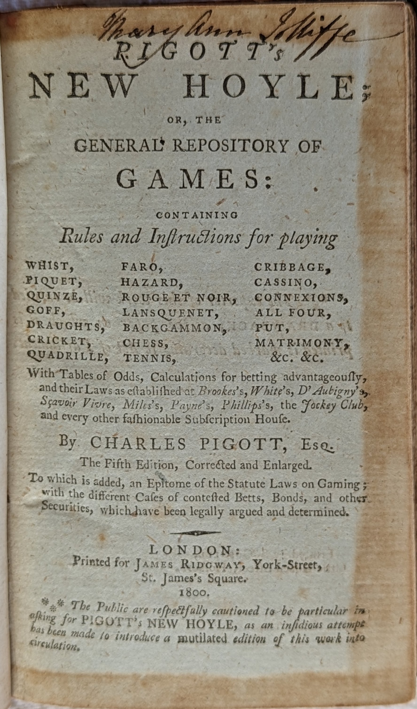

A Descriptive Bibliography of Edmond Hoyle
Copyright © 2014-26 by David Levy
(page updated 2023-11-19)User Guide
Pigott.2.2
Pigott's New Hoyle, printed for James Ridgway, second London edition, second issue, “fifth” edition, 1800.
 |
Title: | PIGOTT's | NEW HOYLE; | OR, THE | GENERAL REPOSITORY OF | GAMES: | CONTAINING | Rules and Inſtructions for playing | [seven lines to left] WHIST, | PIQUET, | QUINZE, | GOFF, | DRAUGHTS, | CRICKET, | QUADRILLE, | [seven lines in center] FARO, | HAZARD, | ROUGE ET NOIR, | LANSQUENET, | BACKGAMMON, | CHESS, | TENNIS, | [seven lines to right] CRIBBAGE, | CASSINO, | CONNEXIONS, | ALL FOUR, | PUT, | MATRIMONY, | &c. &c. | With Tables of Odds, Calculations for betting advantageouſly, | and their Laws as eſtabliſhed at Brookes's, White's, D'Aubigny's, | Sçavoir Vivre, Miles's, Paynes's, Phillips's, the Jockey Club, | and every other faſhionable Subſcription Houſe. | By CHARLES PIGOTT, Esq. | The Fifth Edition, Corrected and Enlarged. | To which is added, an Epitome of the Statute Laws on Gaming; | with the different Caſes of conteſted Betts, Bonds, and other | Securities, which have been legally argued and determined. | [short decorative rule] | LONDON: | Printed for James Ridgway, York-Street, | St. James's Square. | 1800. | [inverted] ⁂ The Public are reſpectfully cautioned to be particular in | aſking for PIGOTT's NEW HOYLE, as an inſidious attempt | has been made to introduce a mutilated edition of this work into | circulation. |
| Collation: | 18o: π2(±π1) A2(A2+1) B–U6 [$½ signed]; 119 leaves, pp. [i–iii] iv [v] vi–x, [1] 2–226 [227–228] |
| Contents: | Signature (Page) Reference | Contents | Signature (Page) Reference | Running Titles |
| π1r (i) | title | |||
| π1v (ii) | ‘[inverted] ⁂ The exporter of this work will be entitled | to a DRAWBACK, as the paper on which it is | printed is marked according to Act of Parliament. | [colophon]’ | |||
| π2r–U6v (iii–228) | see Pigott.2.1 | π2v–U6v (iv–228) | see Pigott.2.1 |
| Plates: | on L4r(115) woodblock: ‘The Draught Table’ |
| Publisher: | James Ridgway, Henry Delahoy Symonds |
| Printer: | Samuel Gosnell (colophon) |
| Notices: | 1799-11-12 Courier and Evening Gazette: "A new edition, being the fifth, corrected to the present time, of Pigot's New Hoyle...By Charles Pigott, Esq. Member of the Jockey Club, &c. &c. Price only 3s. bound." |
| Price: | 3s. bound (advertisement) |
| References: | ESTC T87521, Jessel 1334, Rather 79 |
| Colophon: | ‘Printed by S. Gosnell, | Little Queen Street, Hoborn.’ |
| Copies Seen: | L [7915.de.85] (Google) (lacking U6); O [Jessel f.615]; NvLN [GV1201.P55 1800]; OCl [789.87H G0P]; Levy [0140] |
| Notes: | This is a reissue of Pigott.2.1 with a cancel title. It is not clear whether Samuel Gosnell printed the entire text or just the cancel title which bears his colophon. |